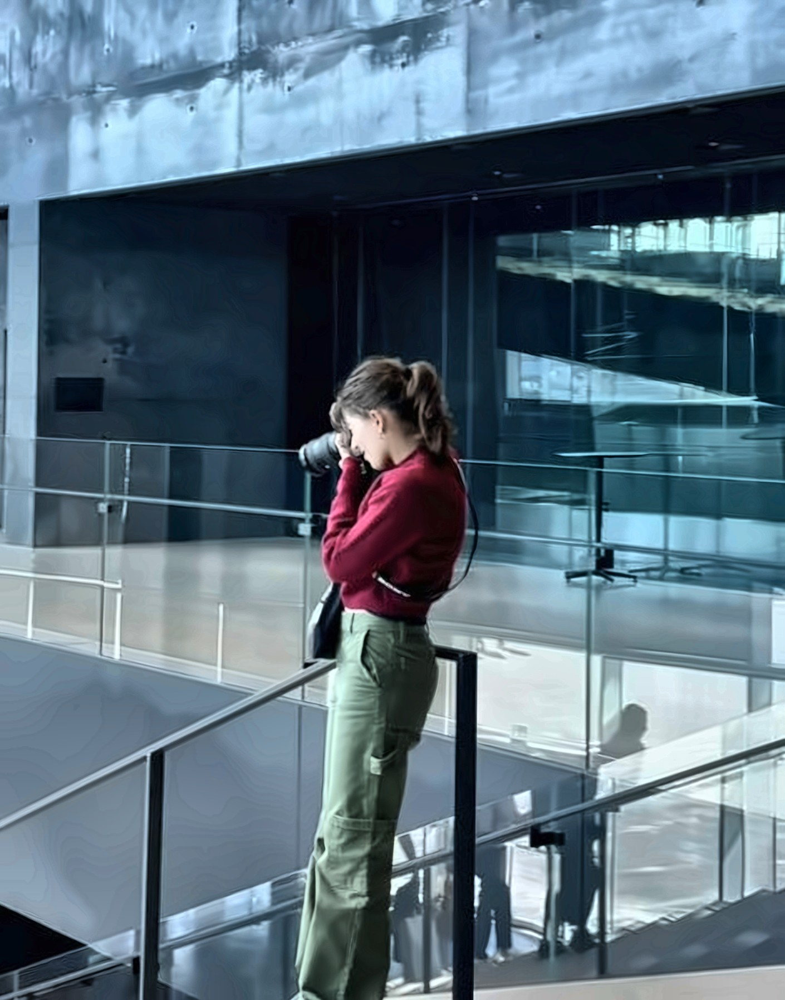
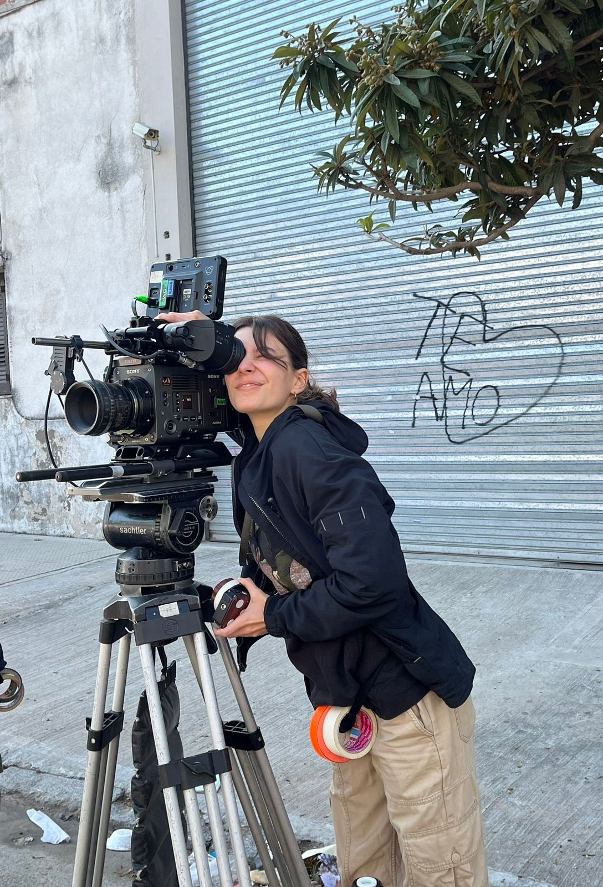

Sobre mí
Soy una cineasta, fotógrafa y creativa argentina de 22 años. Soy egresada de la Universidad del Cine; soy amante del arte y del contenido visual.
Trabajo de imaginar y realizar fotografía y video: cubro eventos y capturo momentos únicos, como también planifico, produzco, dirijo y edito videoclips. Creo en la potencia del arte, de la cámara, de la música y del contenido audiovisual.
En un mundo bombardeado por imágenes, creo indispensable detenerse a realizar cada fotografía y cada fotograma con pasión y con amor.
Contactame
Para briefs, disponibilidad y tarifas, escribime por mail o WhatsApp.